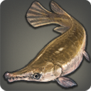
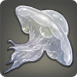

|
|
|
Cloud Jellyfish |
| 45 Skies | |
| Cloud jellyfish aimlessly drift about the Sea of Clouds, tentacles spread out below them, searching for the small birds on which they feed. |
Cloud jellyfish aimlessly drift about the Sea of Clouds, tentacles spread out below them, searching for the small birds on which they feed. Naturalists conclude that the creatures are able to stay aloft by heating the air trapped inside their bodies, making it lighter than the surrounding winds. |
|
Goblin Perch |
| 46 Rivers L (4) | |
The goblins claim that they brought this variety of perch back from their years-long pilgrimage into Othard and Ilsabard...because it tasted so divine.
[Suitable for display in aquariums tier 3 and higher.] |
The goblins claim that they brought this variety of perch back from their years-long pilgrimage into Othard and Ilsabard...because it tasted so divine. |
|
Agelyss Carp |
| 46 Rivers | |
| A rare species of carp native to the Agelyss River. |
A rare species of carp that only can be found in the Agelyss River─so rare, in fact, that the smallfolk believe that even seeing one can bring seven days of good fortune to one's family. |
|
Pike Eel |
| 46 Deep Sea | |
| When stretched straight from head to tail, the longest of saltwater pike eels can measure more than a full yalm in length. |
When stretched straight from head to tail, the longest of saltwater pike eels can measure more than a full yalm in length─or, the length of an average pike. |
|
Assassin Betta |
| 47 Lakes | |
| A violent species of freshwater fish from central Abalathia's Spine that will attack other assassin betta if they draw too near while feeding. |
A violent species of freshwater fish from central Abalathia's Spine that will attack other fish if they draw too near while feeding. |
|
Sludgeskipper |
| 44 Lakes |  |
| Similar to its cousin the mudskipper, the sludgeskipper can also survive outside water for several bells. The sludgeskipper, however, is at home in highly polluted pools where other creatures would likely perish. |
Similar to its cousin the mudskipper, the sludgeskipper can also survive outside water for several bells. The sludgeskipper, however, is at home in highly polluted pools where other creatures would likely perish. |
|
Skyfish |
| 47 Skies | |
| One of the more common creatures found living on the thermal currents above the Sea of Clouds, from a distance, the skyfish appears to be no more than a simple rod outfitted with three sets of transparent wings. |
One of the more common creatures found living on the thermal currents above the Sea of Clouds, from a distance, the skyfish appears to be no more than a simple rod outfitted with three sets of transparent wings. |
|
Mummer Wrasse |
| 47 Deep Sea L (4) | |
This saltwater fish's name comes from the odd lump on its head, thought to resemble a mummer's motley cap.
[Suitable for display in aquariums tier 3 and higher.] |
This saltwater fish's name comes from the odd lump on its head, thought to resemble a mummer's motley cap. During mating season, adult males will butt their heads continuously until a female selects which she concludes has the hardest lump. |
|
Cloud Cutter |
| 48 Skies |  |
| The swiftest inhabitants of the Sea of Clouds, cloud cutters will fly straight in a single direction for malms before quickly turning at some unthinkable angle and darting off in another direction. |
The swiftest inhabitants of the Sea of Clouds, cloud cutters will fly straight in a single direction for malms before quickly turning at some unthinkable angle and darting off in another direction. On rare occasions, they have been known to puncture the armor plating of airships. |
|
Boltfish |
| 48 Lakes | |
| This freshwater anomaly possesses high concentrations of lightning-aspected aetherial energy which can be used to inflict serious injury on any foolish enough to provoke the fish. |
This freshwater anomaly possesses high concentrations of lightning-aspected aetherial energy which can be used to inflict serious injury on any foolish enough to provoke the fish. |
 |
Garpike |
| 48 Lakes | |
| A hard-scaled freshwater fish native to southern Eorzea. |
A hard-scaled freshwater fish native to southern Eorzea. The garpike is mentioned in the famous Raimdelle Codex, where it is described as a thirty-yalm monstrosity with two score hundred teeth and arms like a goobbue's. Fortunately for us, the garpike of Raimdelle's time is no more. |
|
Blind Manta |
| 48 Skies | |
| The blind manta is thought to navigate the Sea of Clouds in a manner similar to how bats keep their bearings─using sound and echoes to determine the location of cliff faces and other creatures. |
The blind manta is thought to navigate the Sea of Clouds in a manner similar to how bats keep their bearings─using sound and echoes to determine the location of cliff faces and other creatures. |
|
Plaice |
| 48 Coastlines | |
| A bottom-feeding flatfish, the plaice is most commonly found blending into the sands covering the sea floor near the Isles of Umbra. |
A bottom-feeding flatfish, the plaice is most commonly found blending into the sands covering the sea floor near the Isles of Umbra, where, rather than pursuing its own prey, it waits for an unsuspecting fry to happen by. |
|
Ilsabardian Bass |
| 48 Lakes | |
| Unlike its Eorzean cousins, the Ilsabardian bass is mean-tempered and quick to bite, attacking other species sharing the same lake until there are none left but its own. |
Unlike its Eorzean cousins, the Ilsabardian bass is mean-tempered and quick to bite, attacking other species sharing the same lake until there are none left but its own. Ill luck is said to come to all who gaze into its deep-red eyes. |
|
Paglth'an Discus |
| 49 Rivers M (2) | |
A brightly colored freshwater fish native to the warm waters in and around the Amalj'aa territory of Paglth'an.
[Suitable for display in aquariums tier 2 and higher.] |
A brightly colored fish native to the warm waters in and around the Amalj'aa territory of Paglth'an. The fact that the wavekin has been spotted in locations distant from their stronghold has led Ul'dahn officials to worry that the beast tribe may be seeding other rivers and lakes with the fish in preparation for the Amalj'aa's advancement into those lands. |
|
Boxing Pleco |
| 49 Rivers | |
| The largest pleco known to naturalists, this variety is known for violently flailing its fins at any unfortunate creature that happens to swim by. |
The largest pleco known to naturalists, this variety is known for violently flailing its fins and ramming its head into any unfortunate creature that happens to swim by, especially during the spawning season. |
|
Rift Sailor |
| 49 Skies | |
| The rift sailor uses the light elastic webbing between its wings to catch the roiling winds of the Sea of Clouds and glide across the rifts. |
The rift sailor uses the light elastic webbing between its aetherially charged wings to catch the roiling winds of the Sea of Clouds and glide across the rifts. Spying one dart across your path is often regarded as an omen of good fortune. |
|
Sea Devil |
| 49 Coastlines | |
| Legends tell of giant sea devils emerging from the sea to wrap their many arms around ships and drag them to the abyss. This seems impossible today, as the largest catches in recent memory are little more than a yalm across. |
Legends tell of giant sea devils emerging from the sea to wrap their many arms around ships and drag them to the abyss. This seems impossible today, as the largest catches in recent memory are little more than a yalm across. |
|
Kissing Trout |
| 50 Rivers | |
| Native to the freshwater rivers of Abalathia's Spine, the kissing trout is famous for its mating “dance” in which a male and female will face each other for several moments before proceeding to couple. |
Native to the freshwater rivers of Abalathia's Spine, the kissing trout is famous for its mating “dance” in which a male and female will face each other for several moments before proceeding to couple. |
|
Angry Pike |
| 50 Rivers | |
| While all species of freshwater pike are known to be violent, this particular variety has been recorded actually biting the ankles of wading fishers. |
While all species of freshwater pike are known to be violent, this particular variety has been recorded actually biting clean through the ankle bones of wading fishers. The sheer ferocity of the angry pike has inspired many a hedge knight to take the wavekin as his sigil. |
|
Goldfish |
| 50 Lakes M (2) | |
The brilliant luster of this freshwater fish native to the Far East has made it a popular addition to the aquariums and garden ponds of Ul'dahn patricians.
[Suitable for display in aquariums tier 2 and higher.] |
The brilliant luster of this freshwater fish native to the Far East has made it a popular addition to the aquariums and garden ponds of Ul'dahn patricians. Once a rarity, recent overbreeding has seen a sharp drop in the market price for these wavekin. |
|
Sagolii Monkfish |
| 50 Sands | |
| When hunting, the Sagolii monkfish uses a method similar to its sea-bound cousin─attracting potential prey to its location with a glowing appendage situated directly above its gaping maw. |
When hunting, the Sagolii monkfish uses a method similar to its sea-bound cousin─attracting potential prey to its location with a glowing appendage situated directly above its gaping maw. |
 |
Saucerfish |
| 50 Skies | |
| Lacking feet or wings to propel itself from the ground, only death awaits the saucerfish that is foolish enough to leave the Sea of Clouds. |
Lacking feet or wings to propel itself from the ground, only death awaits the saucerfish that is foolish enough to leave the Sea of Clouds. Ishgardian legend says that the saucerfish are the descendants(?) of a plate of fish tossed out a window and into the Sea of Clouds by a finicky king. |
|
Rock Lobster |
| 50 Coastlines | |
| A large crimson crustacean commonly found hiding in the rocks off the shores of islands dotting the Rhotano Sea. The rich, flavorful tails are regarded as a delicacy across Eorzea. |
A large crimson crustacean commonly found hiding in the rocks off the shores of islands. The rich, flavorful tails are regarded as a delicacy across Eorzea. |
|
Vampire Lampern |
| 50 Rivers | |
| Just as its name implies, the vampire lampern is indeed a sucker of blood, using its multiple rows of teeth to latch onto its prey, whether it be sea or land creature, and bore a hole from which to drink. |
Just as its name implies, the vampire lampern is indeed a sucker of blood, using its multiple rows of teeth to latch onto its prey, whether it be sea or land creature, and bore a hole from which to drink. |
|